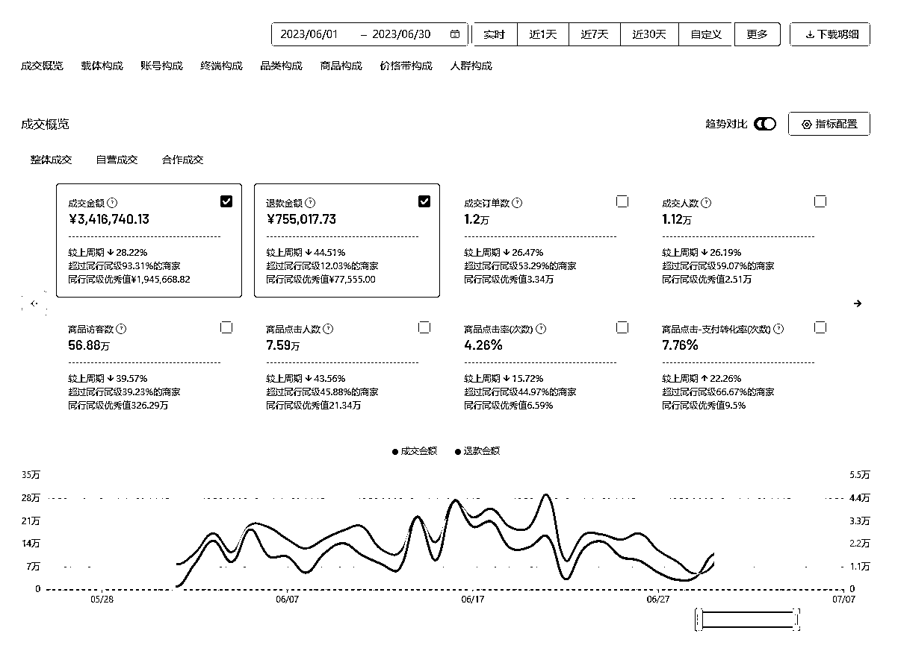
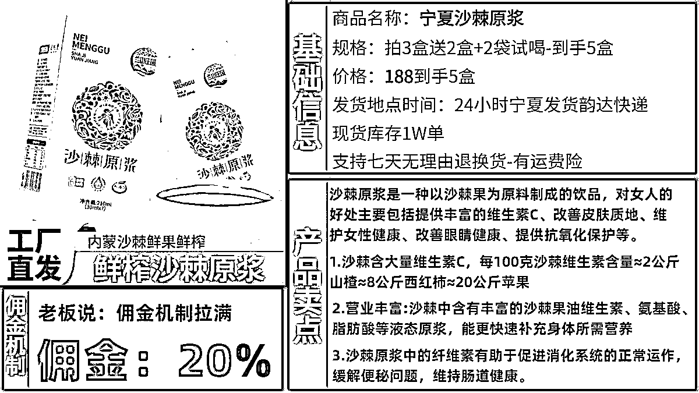

来源：https://oj5ckuh05s.feishu.cn/docx/EzOZdlvI4oSuD8xdS2VcQ7tVnFc
视频号小店达人玩法3个月赚60万的经验分享，适合普通人直接上手。个人操作虽比不上团队化运营，但是目前属于平台红利期，相对于其他平台有流量红利、类目红利、产品红利，比较适合新手入局。
大家好，我是大普，做多传媒创始人、交个朋友电商学苑郑州服务商，大学毕业干了3年投行，2020年开始创业，干跨境电商被割了十几万，走投无路干了抖音小店，幸运的是赶上了抖音电商的风口，自营团队由最初的3个人发展到现在的50多人，去年抖音电商板块总GMV6000万+。发一些数据是为了证明我没有吹牛逼，大家不要多想。

这几年也干过抖音无人直播、快手短视频带货、视频号短视频带货、小红书电商等等，今年开始把重心放到视频号上，目前以直播自营+达人分销为主。
我们团队是由几个项目组组成，抖音、视频号、小红书都在做，也可以理解为阿米巴模式，每个项目自负盈亏，大的项目十几人，小的项目两三人，合伙人之间交叉持股，互为肘臂。我的角色就是不断的去寻找各种互联网项目资源，不断的去寻找项目、测试项目、扩大项目，不断的寻找资源，匹配资源。
视频号电商这个项目我是总操盘手，今年4月份开始入局，按照圈友们分享的习惯，先给大家看看我们目前取得的一些成绩。
其实我是很抗拒从0到1开始做一个项目，因为不确定性太多了，没有方向，没有方法，就像把你丢进原始森林让你求生一样，你需要踩好多次坑，不断的调整方向，克服困难才能找到回家的路，但是也可能找不对方向，就在森林里面永远出不来。我决定做的项目一般都是在看到别人取得结果之后才可能会去干，别人已经跑通0到1，能验证某个项目能赚钱，我直接去抄作业、去研究和拉团队开干，这件事情的成功率是非常大的。
干成项目最快的方式就是抄，没错，这就是我做项目的风格，虽然笨笨的，但却是最稳妥最简单的。我很喜欢向有结果的人学习，非常真诚的用付费的形式向他们请教，因为我认为这一方面是尊重他们的劳动成功，另一方面这样才能真正的学到真正的技术。免费的永远是最贵的。（而且在没有复制之前千万不要创新，你认为的捷径可能存在的都是坑，抄对作业，永远是成本最低，速度最快，成功率最高的做法。站在巨人的肩膀上你才能更容易的超越巨人。还是那句话，先抄再超再钞）
“抄”完作业我发现，简直和两年前的抖音达人玩法一模一样，就是 刷，筛，加，聊。
抖音KOC咋做，视频号就咋做，目前没有什么第三方数据平台，就是靠强执行力刷，然后直接视频号私信要微信号进行合作。核心就一个字“舔”。
因为我们这个项目是双管齐下，分别是店铺的达人玩法和直播间自播，所以今天先就我们这个店铺的达人玩法给大家做个分享，希望能给大家带来一些项目的解决思路。
视频号目前的三大优势：成本低（用户可重复触达）、隐私强（数据相对隐藏）、利润高（综合利润可观）
视频号本质是微信体系里面的短视频平台，依托着微信庞大的流量和用户所展开的短视频和直播内容的对外输出。在2023微信公开课PRO上，视频号团队介绍，2022年总用户使用时长已经超过了朋友圈总用户使用时长的80%。视频号直播的看播时长增长156%，直播带货销售额增长800%。
视频号电商的定位是社交电商、私域电商，今年的GMV目标是3000亿，而今年上半年只完成了不到1000亿。
视频号作为“全村的希望”，现阶段平台功能与后端体验并不完善和成熟，类似于21年初抖音小店的初级阶段，也算是野蛮生长阶段，正是因为平台处在这个阶段里面，视频号小店有很多的产品机会和类目机会。（比如评分体系刚出来两三个月的时间)
目前平台购物的人群画像主要集中在40-60岁的人群，女性占比80%，我们称他们为“中年少女，老年贵妇”，他们是一群在家里有地位，手里有资金，对生活追求品质，对网购产品价格没有对比的一群消费人群。客单价200以上。
为什么视频号有可能是比抖音更适合KOC的机会！因为视频号生态暂时会让时间壁垒存在。
在抖音渠道，有个核心的bug是，信息被第三方平台无限拉齐了，因此，达人无法成为渠道资源的壁垒，因为当一个品牌迅速拉起来的时候，或者一个达人迅速做起来的时候，互相都可以在榜单上被对方看到，从而迅速的拿到整个平台的资源。
但是，视频号不是的，视频号今天我10个人团队，花了一年时间，BD了10万达人。作为我的竞争对手，你希望赶上我的脚步，你就真的也是需要，一步步走过来，一个一个微信的去加过来的。
这一年的时间，就是壁垒。
首先是开店，在这里“https://channels.weixin.qq.com/shop”或者直接搜“视频号小店”等直接扫码开始我们的店铺注册，注册店铺没什么难的，只是有几点先给大家讲一下：
一个法人微信开一个店，一张执照可以开5个店。
个体户开的店适合自播，开不了优选联盟（优选联盟相当于抖音的精选联盟，就是和达人对接的地方）。
企业店适合达播，公司执照的经营范围含有【互联网销售】基本上就可以卖，注册资金没有要求，开店必须要有对公账户，有些特殊类目需要报白：比如滋补品、内衣、3c家电、茶叶、珠宝、酒水等等，因为我们团队之前做过服务商业务，所以这一块也比较简单。
店铺保证金这块，类目不同，保证金不同，基本是5000左右的保证金，然后根据你的gmv进行浮动的，营业额超过50w自动上浮为3w基础店铺保证金。
运费险这块已经全量放开了，需要充值之后才能使用，不过目前这个阶段赔付功能还不完善。
这里有一份 ，基本上常见的问题这里面都有。
不论是哪个平台在这一点上都是一样的，选品一定是整个项目流程中的重中之重。
根据视频号平台的消费人群，给大家推荐几个可以做的产品类目：
居家类目：
包含了厨房产品以及餐饮具产品。家居日用在每个渠道都是大头类目，所以这块类目的数据上限相对是比较高的，其次用户的人群需求围绕着生活为主。
文具、玩具类目：
视频号面对的是下沉人群和下沉市场，人群的年龄段决定了他们的需求除了生活就是家里孩子的教育和学习，所以文具品类是一个客单价以及复购率都比较高的一个品类，且数据爆发程度非常高。玩具品类和文具品类是相似的逻辑，不在过多的赘述。重点是电动玩具这块需要3C资质，在选品上货部分需要花点时间。
渔具+户外品类目：
面对的是平台用户的男性群体。有钱有闲，且渔具产品比较多，无论是渔具本身，还是周边产品，销量数据相对还是比较不错的，渔具本身，需要一点关于渔具的知识。以及对这个事情稍微了解，比如浮漂，鱼竿，鱼线，鱼钩，炮台，鱼饵等等。周边产品，比如遮阳伞，钓鱼服，防晒衣，等等。这类产品在目前的平台上依然是这类人群的喜欢爱好。
家用五金类目：
生活化比较重的品类，其次用户特点和渔具很相似，同样是针对男性人群，高客单，高溢价，高回报，比如家用五金螺丝刀，家用五金工具，家用五金工具配件等等，这类产品在这类人群身上的需求和渔具是一致的。
美妆类目：
现阶段平台的热门产品，高龄人群对于护肤的需求依然同样热烈，但是美妆品就两块问题，一个是产品的质量与功效（现阶段暂时没有品牌概念，只有功效概念），第二块是产品的资质之类的是否完善，能否拿到产品的资质以及授权问题，1688很多。高溢价，高回报，且支持做私域流量，支持复购消费。这块是重点，但是不能乱来，毕竟牵扯到人身皮肤问题。
日用洗化类：
一类是成人用品，一类是儿童用品。比如洗衣液，洗衣皂，洗手液，清洁液等相关产品。先细分人群再细分产品，其次包括某些去油产品，这也算是日化类，尤其是一些外贸上面的此类产品，都是可以操作的。
调味品：
刚需产品，每家每户都需要，如花椒、八角、丁香等，利润非常可观，售后几乎为0。
滋补品、茶叶、珠宝玉石、酒水：
利润大、客单价高、可以屯私域，但是开店门槛稍高，需要报白。
在产品分类上面，主要分为引流款、主推款和利润款。引流款是与达人打开合作的一种方式，作用有很多，降低第一次与达人合作的门槛难度，也可以为店铺提升体验分。记得这个产品选择的时候必须做好品控，因为他会直接导致与达人合作的是否成功。
一般我们没有自己的产品或者渠道的情况下，都是建议大家在1688或pdd进行选品。
首选1688，确定好我们选择的品类之后，就尽量找到那些是生产厂家的店铺进行采购，和商家合作的方式有很多，很多商家其实还是蛮诚信的，只要前期商量好合作方式之后基本上商家都非常守规矩，因为店铺在那里，但是在刚开始接触的时候，还是建议大家走线上的付款方式。
1688基本上可以做到当天发货，晚上出揽件，但是部分商品退换货需要自己承担运费。拼多多发货相对较慢，拼单成功后基本上都是24小时内发出，而且拼多多有很多好评卡，好评卡上会有拼多多的logo字样，让用户看到的话他会给你退货（虽然现在视频号小店的退货入口不好找）。而且拼多多的价格不稳定，当你拍多了的时候，商家会涨价，而且货源库存不稳定，一旦爆单，就有很大的风险发不出货。
找货源也是像平常买东西一样，一定要货比三家，人群店铺属性，是否一件单发，了解库存信息，发货时间，售后处理等，厂家有厂家的圈子，比如漯河那边都是卖零食的，厂家A叫张三，我们给厂家B打电话时就可以问下厂家A他们的发货速度怎样，实力怎样，产品质量如何？潜意识的暗示厂家B，我们和厂家A联系过，再决定最终与谁合作； 如果厂家B问你，厂家A给你什么价格，你就把价格报给他，让厂家认为我们在货比三家； 不管最终有没有与厂家A或B达成合作，不要得罪他们， 万一真爆单了没库存店铺离死不远了，达人也会骂你。
所以我们选择的时候，尽量选择1688，如果实在找不到的时候再去看拼多多，不论是哪个货源在出订单以后一定要多找一家货源，而且尽量要找到源头，不论是拼多多还是1688，他们都可能是经销商或者无货源，可以从订单的退货电话上或者产品上面找相应的产品源头。防止店铺爆单后发不出货来，最后钱没赚到反而还亏钱。
很多人喜欢把供应链挂在嘴边，我认识XXX工厂老板，认识XXX供应链，能给我低价，可能最后这些品卖出去的订
单量还赶不上一个做无货源的店铺（1688），要深刻理解选品的底层逻辑。
有些人相信选品能够大力出奇迹，喜欢玩大量铺货的玩法，但是你要知道这种玩法适合有自然流量、做店群模式的，做视频号小店目前是不适合的，现在视频号商城属于初期阶段，他的商城构架还没完善，平台用户的购物习惯还没有养成，大家需要买东西的时候还想不到视频号商城，所以他的商品卡展示的机会很少，你的那么多产品没有地方展示，所以说不要去大量的铺货。品不在于多在于精，每个品都必须精挑细选。
目前和我们合作的带货达人有两种，分别是直播达人和短视频达人，我们在找达人的时候可以通过私聊的方式去寻找达人，目前平台对私聊没有数量限制，正好可以大量的去积累主播资源，和达人对接就是沟通问题，在沟通之前你需要为你的产品或者店铺准备一些资料，例如手卡，货盘表，给达人寄样的话要有样品跟进表，沟通的达人要有达人跟踪表等等，做过抖店的大家应该都有这些资料，如果谁还需要这些资料我可以免费分享送给大家。
在选择达人深度合作的时候，我们要会从数据方面了解达人的带货能力，例如场观、热度、橱窗数据等，这样我们能够知道该直播间的一个流量数据，知道达人的带货水平，还有一些第三方的数据平台，都能帮助我们更好的了解达人和产品。
在邮寄样品这块，以客单价在200+的一个小家电产品举例，我们的寄样标准为:
1、场观大于5000
2、热度值大于30可免费寄样
3、场观高的主播可以多次寄样
4、寄样的同时和主播确定好排样日期
5、收费寄样，出单返款（小主播）
6、详细记录寄样信息，及时跟进带货日期
第一：谈合作
禁止发送：您好，在忙吗？有个商品想找您合作等这类有上文没下文的话，达人每天消息太多了，根本回复不过来，所以有时候看到消息自动忽略，浪费时间；
正确方法，如：我是xxx的店铺的负责人，我们家的爆款产品xx、xx、都有xx主播带过，并且月销过xx，请问您是否有合作意向呢？
第二：达人不回信息
有些带货能力不错的达人可能会有很多人在进行沟通交流，你发的消息很可能会被忽视，除了发上面我们准备的资料以外，还要隔三差五的去联系一下达人，只要他不把你拉黑，你店铺上新品，你就做成手卡给达人发过去。
我们的微信不只是一个简单的销售账号，我们应该把我们的微信包装成一个活生生的人，把我们的 朋友圈好好的利用起来。晒晒主播数据，发些产品发货视频，自己的生活片段，公司团建活动，等等展示我们自己实力和魅力。
第三：收到我们邮寄的产品后没有消息
这个请大家一定要放平心态，大家一定也会遇到这种情况的，确实存在一些达人骗样品的情况。之前抖店商家共同建了一个达人资料群，商家专门记录自己遇到的骗样品的达人。
大家如果有电话的话一定要打电话联系，比发微信会好很多。
收到之后明确表示不想带该产品，那你根据实际情况，样品单价比较高的话就尽量要回，或者要回货款，减小不必要的损失。或者别太惯着达人，别当舔狗，例：达人拿了我的样品，带别人家的链接。直接骂，问他想不想要直播间了？带人去直播间骂，举报，刷屏，视频下骂，让达人道歉，重新带我的链接。
很多达人都没有选品团队，同行什么品卖的好他们就跟着卖什么品，这就是我们常说的跟风，至少有90%的达人都不具备选品能力；所以达人爱跟风，达人带货最难的是 0-1，你要去营造你这个产品很爆的样子，这样达人们才会相信你这个产品好卖，才会愿意卖。
因为他们拍视频需要很多时间，做直播如果销售额低会影响他的流量，所以他们也不轻易尝试。也许你找某些大达人亏了，但是其他达人跟风了你就赢了。
达人也是人，人情世故很重要，现在我们商务每周一次的任务就是给合作的达人送水果，家里有孩子的给孩子买礼物，逢年过节给达人买礼品，每个重要达人的生日都在他的小本子记着，从金钱和情绪两方面下手，让他们给你带货看他们会不会好意思拒绝。
我们要知道规模效应，转化率是达人越多越高的，只有个别达人带货的时候转化率低的一塌糊涂，所以：
比如你发 100 个样品，不要一天发几个，要一起发，达人一起收到货，一起出视频，一起直播。大部分达人粉丝重叠度很高，多个达人一起推品转化率才会高，产品才会爆，爆了才会有达人跟风，会更爆。
加达人不到 500 个基本看不到什么成绩。
而且如果你手里面达人数量达到2000+的话，你出去找工作，面试达人BD岗位的话，那你是属于带资源入场，工资相对于没有资源的达人BD最起码再增加2000+。这就是掌握达人资源的一个身价优势，所以，不论怎么样，赶紧把达人资源积累起来，那将是你自身的一个价值。
1、每个员工准备3-5个微信老号 (1年以上最好)，每天一个号能打30个招呼，通过率百分之40%，单员工加20-30达人/天符合标准。
2、加达人渠道分为: 视频号团长后台的达人广场 (视频号小店后台目前还没更新，估计快了)，数据分析平台找到微信号直接加，评论区评论，直播间送礼物等方式。
最有效的方式为: 达人合作关系好了以后让达人帮你转介绍，达人的朋友也是达人并且有结果，有实力。
3、样品问题。
弱势期: 新链接小达人也免费发样品，让他去链接里拍 (做基础销量)，线下反。
中势期: 看达人橱窗销量，月销5000单以上免费发样，5000以下付费领样5单返现。
强势期: 别装逼，维护好达人，你的竞争对手会开高佣金翘你的达人。
4、达人SABC分类，微信标签分类一定要做好。
S=强关系有品就带
A=合作过关系一般
B=聊过还未合作
C=发消息没回复
月销几十万的达人，哪怕不回复也要每天沟通问候。
沟通女商务用男性，男商务用女性。要帅，要美，要有生活，朋友圈要真实。
手卡制作比较简单，用wps就可以，样式可参考下面的：

团队的搭建具体可以参考下方的思维导图，记住一句话：大量筛人，不行就开掉，人不是培养起来的，一定要明白赛马机制。只筛选，不教育。
1) 哈士奇/至尊宝：找同款产品
2) 【神速搬家】：上架产品（平台审核比较慢）
3) 【逸淘】：拍单软件（用户设置-退货退款-手动拍单-自动拍单）
4) 【企业微信】：客服软件 、实名300/年
5) 代发软件：【店管家】【我打】
具体规则大家看官方文档就行了，这里只是给大家讲一下我的理解。开好店铺之后，大家一定要知道平台的一些规则，这个一定要注意，因为很多新手小白上来就是选品卖货，想第一时间就能看到店铺的收益，如果连续几天自己店铺的gmv没有动静，他一开始的决心就有所动摇和松懈，这也是大部分人失败者的根本原因，熬不过黑暗怎么能见到黎明。
目前这个视频号平台的规则还不够完善，所以大家在做视频号店铺的时候感觉相对比较惬意，但是视频号店铺规则不完善不代表他没有规则，这个平台是喜欢秋后算账的，即使你把你的某些产品错类目上架，你怎么做现在没关系，等到他后面发现你的时候，他封杀你的时候毫不手软。这一点希望大家不要再踩坑了。
1、一定要重视库存。宁可不赚钱也要保店(除非有备用店)。厂家如果说有1万现货库存，最多给他跑3000库存，如果因为发货的事情导致店铺评分过低，所有的工作前功尽弃需要从头开始。
2、每天多找达人，积累自己的达人库，可以把找达人和加达人这两个工作分开来，避免员工把资源带走。
3、如果有一天有一个达人帮你赚了20万，请花10万给他，给他买流量，给他买礼物，主动给他坑位费，跟他长期签约。因为达人也有达人的圈子，一旦这个达人觉得，哎你这个人不错，品不错，老板也大方，他也会告诉他的朋友。达人的朋友也是达人，大概率和他差不多段位。你将节省大量 BD 的时间和精力，也能进一步稳固渠道，防止你的竞争对手跟投。一定要舍得花钱! !
我司在郑州，欢迎朋友们来公司喝茶聊项目，说不定有合作共赢的机会呢！哈哈。
作为一个曾经社群里的潜伏着，这是我的首次分享，希望能帮助到圈友们。如果感觉有收获记得给我点个赞，哈哈。等我抽时间再分享下我们直播间自营的玩法。
我坚信，利他是极致的利己。希望我的分享能给朋友们带来一些灵感。感谢信任，感谢大家！